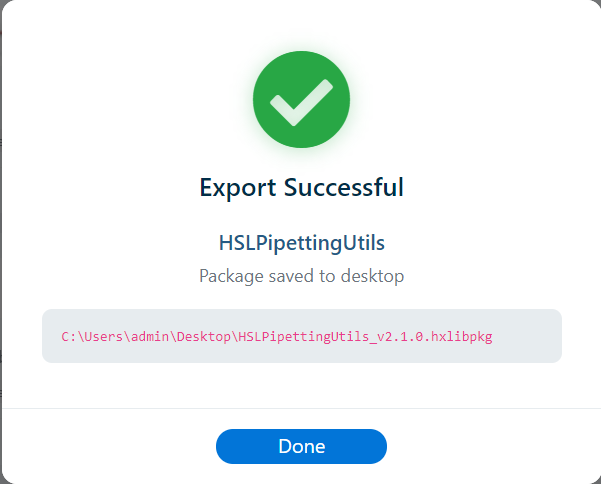

Overview
Venus Library Manager uses a unified visual identity for all success confirmation dialogs. Rather than using plain browser alert() pop-ups, every successful operation displays a styled modal dialog with a consistent appearance:
- A large green check-circle icon with a subtle drop shadow
- A bold title describing the completed action
- The library or resource name displayed prominently
- A secondary detail line (e.g. file counts)
- A paths section showing filesystem locations (monospace font, rounded background)
- An optional status bar for signature verification, COM registration results, or warnings
- A centered Done button to dismiss the dialog

This design ensures that users receive clear, readable feedback regardless of which operation was performed, and that the application maintains a professional, cohesive look and feel.
Success Events
The following table lists every operation that produces a styled success dialog, along with the information displayed in each case:
| Operation | Modal Title | Name Line | Detail Line | Paths Shown | Status Bar |
|---|---|---|---|---|---|
| Library imported | Library Installed Successfully! | Library name | File count installed | Library Files path, Demo Methods path, Package Cached path | COM registration result (success or warning) |
| Package created | Package Created Successfully! | Library name | Library file count, demo method file count | Saved To (output path) | — |
| Library exported | Library Exported Successfully! | Library name | Library file count, help file count, demo file count | Saved To (output path) | — |
| Archive exported | Archive Exported Successfully! | — | Number of libraries included | Saved To (output path) + list of libraries with file counts | Warnings (if any) |
| Archive imported | Archive Imported Successfully! | — | Succeeded count, failed count (if any) | Per-library success/fail list with icons | — |
| Version rollback | Version Rollback Successful! | Library name | File count installed, target version | — | — |
| System library repaired | System Library Repaired Successfully! | Library name | File count re-extracted | — | Package signature verified (if signed) |
| Library repaired | Library Repaired Successfully! | Library name | File count re-extracted, version | — | Package signature verified (if signed) |
| Audit log saved | Audit Log Saved Successfully! | — | — | Saved To (output path) | — |
Implementation
Two modal elements in index.html serve as the success dialog containers:
#importSuccessModal
Used exclusively for the Library Imported flow. This modal is populated directly by the import handler in main.js using jQuery selectors targeting class names like .import-success-libname, .import-success-filecount, .import-success-paths, and .import-success-com-status.
#genericSuccessModal
A reusable modal used by all other success operations. It is displayed via the showGenericSuccessModal(opts) helper function in main.js.
Helper Function
showGenericSuccessModal({
title: "Package Created Successfully!", // Modal heading
name: "MyLibrary", // Bold primary line (optional)
detail: "5 library files, 2 demo files", // Muted secondary line (optional)
paths: [ // Path rows (optional)
{ label: "Saved To", value: "C:\\output\\MyLibrary.hxlibpkg" }
],
listHtml: "<div>...</div>", // Arbitrary HTML block (optional)
statusHtml: "COM DLLs registered: MyLib.dll", // Status bar text (optional)
statusClass: "com-ok" // "com-ok" (green) or "com-warning" (yellow)
});All parameters except title are optional. When a parameter is omitted or null, its corresponding section is hidden with the d-none class. The paths array and listHtml can be used together — paths are rendered first, followed by the list HTML.
#auditSuccessModal
A dedicated modal for the Audit Log Saved event. Reuses the same CSS classes as the import success modal but has its own HTML element for simplicity.
CSS Classes
All success modals share the same set of CSS classes defined under the /* Import Success Modal */ section in main.css:
| Class | Purpose |
|---|---|
.import-success-body | Modal body with centered text layout and 40 px top padding |
.import-success-checkmark | Container for the large green check icon |
.import-success-title | Bold heading below the check icon (1.3 rem) |
.import-success-libname | Primary name line (1.05 rem, semi-bold) |
.import-success-filecount | Secondary muted detail line (0.9 rem) |
.import-success-paths | Monospace path box with rounded background |
.import-success-paths .path-label | Uppercase label inside the path box (0.7 rem) |
.import-success-paths .path-value | Monospace path value (word-break enabled) |
.import-success-com-status | Status bar with rounded corners and colored border |
.import-success-com-status.com-ok | Green variant - success confirmation |
.import-success-com-status.com-warning | Yellow variant - warning notification |
Related
- Visual Identity & Assets - Overall branding and icon system
- Importing Libraries - The import workflow that triggers the original success modal
- Creating Packages - Package creation success dialog
- Exporting Libraries - Library and archive export success dialogs
- Version Rollback - Rollback success dialog
- Integrity Verification - Repair success dialogs
- Library Audit Log - Audit log save success dialog